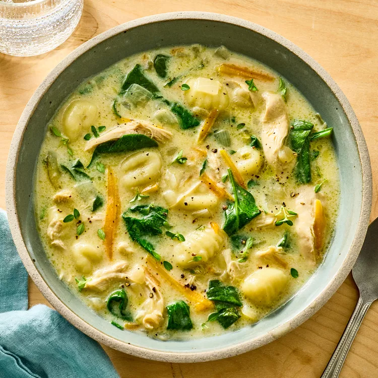

Vezi video
Supă de pui cu gnocchi
Cremă ușoară, cu piept de pui, gnocchi și spanac — varianta „Olive Garden”.
| Calorii | Proteine | Grăsimi | Timp |
|---|---|---|---|
| 75kcal | 6gr | 4gr | ~35–45 min |
Ingrediente
- 3 linguri ulei de măsline extra-virgin
- 1½ căni ceapă galbenă tocată
- ¾ cană țelină tăiată felii
- 2 linguri usturoi mărunțit
- 2 lingurițe frunze de cimbru proaspăt
- 5 căni supă de pui (cu sodiu redus)
- ¾ cană morcovi „matchstick” (bastonașe subțiri)
- ½ linguriță piper măcinat
- ⅛ linguriță sare
- 1 piept de pui cu os (~400 g), fără piele
- 1 pachet (340 g) gnocchi de cartofi, refrigerat
- 3 căni baby spanac, tocat grosier
- ½ cană half-and-half (sau ¼ cană smântână pt. gătit + ¼ cană lapte integral)
- 2 linguri amidon de porumb
Instrucțiuni
- Sotează baza: Încălzește uleiul; adaugă ceapa și țelina ~5 min. Pune usturoiul și cimbrul ~1 min.
- Fierbe puiul: Adaugă supa, morcovii, piperul, sarea și pieptul de pui; fierbere ușoară 15–20 min (până la 74°C). Scoate puiul.
- Gnocchi + spanac: Pune gnocchi ~5 min; mărunțește puiul și pune-l înapoi; adaugă spanacul până se înmoaie.
- Îngroașă: Amestecă half-and-half cu amidonul; toarnă în fir subțire, amestecând, ~2 min. Potrivește de sare/piper.